sessionInfo()Biostat 203B Homework 2
Due Feb 10 @ 11:59PM
Display machine information for reproducibility:
Load necessary libraries (you can add more as needed).
library(data.table)
library(lubridate)
library(R.utils)
library(tidyverse)MIMIC data location
mimic_path <- "~/mimic"In this exercise, we use tidyverse (ggplot2, dplyr, etc) to explore the MIMIC-IV data introduced in homework 1 and to build a cohort of ICU stays.
Display the contents of MIMIC data folder.
system(str_c("ls -l ", mimic_path, "/"), intern = TRUE)[1] "total 24"
[2] "-rw-r--r--@ 1 tinachang staff 2518 Jan 25 09:34 LICENSE.txt"
[3] "drwxr-xr-x@ 5 tinachang staff 160 Jan 17 15:45 MIMIC-reduce-chartevents"
[4] "-rw-r--r--@ 1 tinachang staff 2459 Jan 25 09:34 SHA256SUMS.txt"
[5] "drwxr-xr-x@ 6 tinachang staff 192 Jan 19 16:11 core"
[6] "drwxr-xr-x@ 21 tinachang staff 672 Jan 17 16:11 hosp"
[7] "drwxr-xr-x@ 11 tinachang staff 352 Jan 19 16:10 icu"
[8] "-rw-r--r--@ 1 tinachang staff 797 Jan 25 09:35 index.html" system(str_c("ls -l ", mimic_path, "/core"), intern = TRUE)[1] "total 142944"
[2] "-rw-r--r--@ 1 tinachang staff 17208966 Mar 15 2021 admissions.csv.gz"
[3] "-rw-r--r--@ 1 tinachang staff 606 Jan 4 2022 index.html"
[4] "-rw-r--r--@ 1 tinachang staff 2955582 Mar 15 2021 patients.csv.gz"
[5] "-rw-r--r--@ 1 tinachang staff 53014503 Mar 15 2021 transfers.csv.gz" system(str_c("ls -l ", mimic_path, "/hosp"), intern = TRUE) [1] "total 9243184"
[2] "-rw-r--r--@ 1 tinachang staff 430049 Mar 15 2021 d_hcpcs.csv.gz"
[3] "-rw-r--r--@ 1 tinachang staff 863239 Mar 15 2021 d_icd_diagnoses.csv.gz"
[4] "-rw-r--r--@ 1 tinachang staff 579998 Mar 15 2021 d_icd_procedures.csv.gz"
[5] "-rw-r--r--@ 1 tinachang staff 14898 Mar 15 2021 d_labitems.csv.gz"
[6] "-rw-r--r--@ 1 tinachang staff 29531152 Mar 15 2021 diagnoses_icd.csv.gz"
[7] "-rw-r--r--@ 1 tinachang staff 11684062 Mar 15 2021 drgcodes.csv.gz"
[8] "-rw-r--r--@ 1 tinachang staff 515763427 Mar 15 2021 emar.csv.gz"
[9] "-rw-r--r--@ 1 tinachang staff 476252563 Mar 15 2021 emar_detail.csv.gz"
[10] "-rw-r--r--@ 1 tinachang staff 2098831 Mar 15 2021 hcpcsevents.csv.gz"
[11] "-rw-r--r--@ 1 tinachang staff 2325 Jan 4 2022 index.html"
[12] "-rw-r--r--@ 1 tinachang staff 2091865786 Mar 15 2021 labevents.csv.gz"
[13] "-rw-r--r--@ 1 tinachang staff 171624288 Jan 27 2022 labevents_filtered_itemid.csv.gz"
[14] "-rw-r--r--@ 1 tinachang staff 99133381 Mar 15 2021 microbiologyevents.csv.gz"
[15] "-rw-r--r--@ 1 tinachang staff 422874088 Mar 15 2021 pharmacy.csv.gz"
[16] "-rw-r--r--@ 1 tinachang staff 501381155 Mar 15 2021 poe.csv.gz"
[17] "-rw-r--r--@ 1 tinachang staff 24020923 Mar 15 2021 poe_detail.csv.gz"
[18] "-rw-r--r--@ 1 tinachang staff 367041717 Mar 15 2021 prescriptions.csv.gz"
[19] "-rw-r--r--@ 1 tinachang staff 7750325 Mar 15 2021 procedures_icd.csv.gz"
[20] "-rw-r--r--@ 1 tinachang staff 9565293 Mar 15 2021 services.csv.gz" system(str_c("ls -l ", mimic_path, "/icu"), intern = TRUE) [1] "total 5698008"
[2] "-rw-r--r--@ 1 tinachang staff 2350783547 Mar 15 2021 chartevents.csv.gz"
[3] "-rw-r--r--@ 1 tinachang staff 110272408 Jan 27 2022 chartevents_filtered_itemid.csv.gz"
[4] "-rw-r--r--@ 1 tinachang staff 55917 Mar 15 2021 d_items.csv.gz"
[5] "-rw-r--r--@ 1 tinachang staff 43296273 Mar 15 2021 datetimeevents.csv.gz"
[6] "-rw-r--r--@ 1 tinachang staff 2848628 Mar 15 2021 icustays.csv.gz"
[7] "-rw-r--r--@ 1 tinachang staff 1103 Jan 4 2022 index.html"
[8] "-rw-r--r--@ 1 tinachang staff 352443512 Mar 15 2021 inputevents.csv.gz"
[9] "-rw-r--r--@ 1 tinachang staff 37095672 Mar 15 2021 outputevents.csv.gz"
[10] "-rw-r--r--@ 1 tinachang staff 20567368 Mar 15 2021 procedureevents.csv.gz" 1 Q1. read.csv (base R) vs read_csv (tidyverse) vs fread (data.table)
There are quite a few utilities in R for reading plain text data files. Let us test the speed of reading a moderate sized compressed csv file, admissions.csv.gz, by three programs: read.csv in base R, read_csv in tidyverse, and fread in the popular data.table package.
Which function is fastest? Is there difference in the (default) parsed data types? (Hint: R function system.time measures run times.)
For later questions, we stick to the read_csv in tidyverse.
###solution###
#`read.csv` in base R
system.time(read.csv(str_c(mimic_path, "/core/admissions.csv.gz"))) user system elapsed
24.195 0.421 25.924 #`read_csv` in tidyverse
system.time(read_csv(str_c(mimic_path, "/core/admissions.csv.gz"))) user system elapsed
2.685 0.631 1.507 # `fread` in the popular data.table package.
system.time(fread(str_c(mimic_path, "/core/admissions.csv.gz"))) user system elapsed
0.980 0.305 0.794 fread() is the fasted one and read.csv() is the slowest one.
Data Types
#`read.csv` in base R
str(read.csv(str_c(mimic_path, "/core/admissions.csv.gz")))'data.frame': 523740 obs. of 15 variables:
$ subject_id : int 14679932 15585972 11989120 17817079 15078341 19124609 17301855 17991012 16865435 13693648 ...
$ hadm_id : int 21038362 24941086 21965160 24709883 23272159 20517215 29732723 24298836 23216961 21640725 ...
$ admittime : Factor w/ 514435 levels "2105-10-04 17:26:00",..: 162283 62357 210124 330971 56261 351331 166789 430755 456181 3345 ...
$ dischtime : Factor w/ 507789 levels "2105-10-12 11:11:00",..: 160158 61694 207314 326516 55632 346651 164592 424886 449948 3316 ...
$ deathtime : Factor w/ 9337 levels "","2110-01-25 09:40:00",..: 1 1 1 1 1 1 1 1 1 1 ...
$ admission_type : Factor w/ 9 levels "AMBULATORY OBSERVATION",..: 4 4 4 4 4 4 4 4 4 4 ...
$ admission_location : Factor w/ 12 levels "","AMBULATORY SURGERY TRANSFER",..: 1 1 1 1 1 1 1 1 1 1 ...
$ discharge_location : Factor w/ 14 levels "","ACUTE HOSPITAL",..: 8 8 8 8 8 8 8 8 8 8 ...
$ insurance : Factor w/ 3 levels "Medicaid","Medicare",..: 3 3 3 3 3 3 3 3 3 3 ...
$ language : Factor w/ 2 levels "?","ENGLISH": 2 2 2 2 2 2 2 2 2 2 ...
$ marital_status : Factor w/ 5 levels "","DIVORCED",..: 4 1 1 1 1 1 1 1 1 1 ...
$ ethnicity : Factor w/ 8 levels "AMERICAN INDIAN/ALASKA NATIVE",..: 7 8 7 5 3 7 8 8 8 8 ...
$ edregtime : Factor w/ 310256 levels "","2109-08-31 02:46:00",..: 1 1 1 1 1 1 1 1 1 1 ...
$ edouttime : Factor w/ 310322 levels "","2109-08-31 07:51:00",..: 1 1 1 1 1 1 1 1 1 1 ...
$ hospital_expire_flag: int 0 0 0 0 0 0 0 0 0 0 ...#`read_csv` in tidyverse
str(read_csv(str_c(mimic_path, "/core/admissions.csv.gz")))spc_tbl_ [523,740 × 15] (S3: spec_tbl_df/tbl_df/tbl/data.frame)
$ subject_id : num [1:523740] 14679932 15585972 11989120 17817079 15078341 ...
$ hadm_id : num [1:523740] 21038362 24941086 21965160 24709883 23272159 ...
$ admittime : POSIXct[1:523740], format: "2139-09-26 14:16:00" "2123-10-07 23:56:00" ...
$ dischtime : POSIXct[1:523740], format: "2139-09-28 11:30:00" "2123-10-12 11:22:00" ...
$ deathtime : POSIXct[1:523740], format: NA NA ...
$ admission_type : chr [1:523740] "ELECTIVE" "ELECTIVE" "ELECTIVE" "ELECTIVE" ...
$ admission_location : chr [1:523740] NA NA NA NA ...
$ discharge_location : chr [1:523740] "HOME" "HOME" "HOME" "HOME" ...
$ insurance : chr [1:523740] "Other" "Other" "Other" "Other" ...
$ language : chr [1:523740] "ENGLISH" "ENGLISH" "ENGLISH" "ENGLISH" ...
$ marital_status : chr [1:523740] "SINGLE" NA NA NA ...
$ ethnicity : chr [1:523740] "UNKNOWN" "WHITE" "UNKNOWN" "OTHER" ...
$ edregtime : POSIXct[1:523740], format: NA NA ...
$ edouttime : POSIXct[1:523740], format: NA NA ...
$ hospital_expire_flag: num [1:523740] 0 0 0 0 0 0 0 0 0 0 ...
- attr(*, "spec")=
.. cols(
.. subject_id = col_double(),
.. hadm_id = col_double(),
.. admittime = col_datetime(format = ""),
.. dischtime = col_datetime(format = ""),
.. deathtime = col_datetime(format = ""),
.. admission_type = col_character(),
.. admission_location = col_character(),
.. discharge_location = col_character(),
.. insurance = col_character(),
.. language = col_character(),
.. marital_status = col_character(),
.. ethnicity = col_character(),
.. edregtime = col_datetime(format = ""),
.. edouttime = col_datetime(format = ""),
.. hospital_expire_flag = col_double()
.. )
- attr(*, "problems")=<externalptr> # `fread` in the popular data.table package.
str(fread(str_c(mimic_path, "/core/admissions.csv.gz")))Classes 'data.table' and 'data.frame': 523740 obs. of 15 variables:
$ subject_id : int 14679932 15585972 11989120 17817079 15078341 19124609 17301855 17991012 16865435 13693648 ...
$ hadm_id : int 21038362 24941086 21965160 24709883 23272159 20517215 29732723 24298836 23216961 21640725 ...
$ admittime : POSIXct, format: "2139-09-26 14:16:00" "2123-10-07 23:56:00" ...
$ dischtime : POSIXct, format: "2139-09-28 11:30:00" "2123-10-12 11:22:00" ...
$ deathtime : POSIXct, format: NA NA ...
$ admission_type : chr "ELECTIVE" "ELECTIVE" "ELECTIVE" "ELECTIVE" ...
$ admission_location : chr "" "" "" "" ...
$ discharge_location : chr "HOME" "HOME" "HOME" "HOME" ...
$ insurance : chr "Other" "Other" "Other" "Other" ...
$ language : chr "ENGLISH" "ENGLISH" "ENGLISH" "ENGLISH" ...
$ marital_status : chr "SINGLE" "" "" "" ...
$ ethnicity : chr "UNKNOWN" "WHITE" "UNKNOWN" "OTHER" ...
$ edregtime : POSIXct, format: NA NA ...
$ edouttime : POSIXct, format: NA NA ...
$ hospital_expire_flag: int 0 0 0 0 0 0 0 0 0 0 ...
- attr(*, ".internal.selfref")=<externalptr> The default data type for read_csv and fread are the same. However, read.csv is different. The data structure all are data.frame, but the class of variable are different.
2 Q2. ICU stays
icustays.csv.gz (https://mimic.mit.edu/docs/iv/modules/icu/icustays/) contains data about Intensive Care Units (ICU) stays. The first 10 lines are
system(
str_c(
"zcat <",
str_c(mimic_path, "/icu/icustays.csv.gz"),
" | head"
),
intern = TRUE
) [1] "subject_id,hadm_id,stay_id,first_careunit,last_careunit,intime,outtime,los"
[2] "17867402,24528534,31793211,Trauma SICU (TSICU),Trauma SICU (TSICU),2154-03-03 04:11:00,2154-03-04 18:16:56,1.5874537037037035"
[3] "14435996,28960964,31983544,Trauma SICU (TSICU),Trauma SICU (TSICU),2150-06-19 17:57:00,2150-06-22 18:33:54,3.025625"
[4] "17609946,27385897,33183475,Trauma SICU (TSICU),Trauma SICU (TSICU),2138-02-05 18:54:00,2138-02-15 12:42:05,9.741724537037038"
[5] "18966770,23483021,34131444,Trauma SICU (TSICU),Trauma SICU (TSICU),2123-10-25 10:35:00,2123-10-25 18:59:47,0.35054398148148147"
[6] "12776735,20817525,34547665,Neuro Stepdown,Neuro Stepdown,2200-07-12 00:33:00,2200-07-13 16:44:40,1.6747685185185184"
[7] "10215159,24283593,34569476,Trauma SICU (TSICU),Trauma SICU (TSICU),2124-09-20 15:05:29,2124-09-21 22:06:58,1.2926967592592593"
[8] "14489052,26516390,35056286,Trauma SICU (TSICU),Trauma SICU (TSICU),2118-10-26 10:33:56,2118-10-26 20:28:10,0.4126620370370371"
[9] "15914763,28906020,36909804,Trauma SICU (TSICU),Trauma SICU (TSICU),2176-12-14 12:00:00,2176-12-17 11:47:01,2.9909837962962964"
[10] "16256226,20013290,39289362,Neuro Stepdown,Neuro Stepdown,2150-12-20 16:09:08,2150-12-21 14:58:40,0.9510648148148149" - Import
icustatys.csv.gzas a tibbleicustays_tble.
icustays_tble <- read_csv(str_c(mimic_path, "/icu/icustays.csv.gz"))
head(icustays_tble)# A tibble: 6 × 8
subject_id hadm_id stay_id first_careunit last_ca…¹ intime
<dbl> <dbl> <dbl> <chr> <chr> <dttm>
1 17867402 24528534 31793211 Trauma SICU (TSICU) Trauma S… 2154-03-03 04:11:00
2 14435996 28960964 31983544 Trauma SICU (TSICU) Trauma S… 2150-06-19 17:57:00
3 17609946 27385897 33183475 Trauma SICU (TSICU) Trauma S… 2138-02-05 18:54:00
4 18966770 23483021 34131444 Trauma SICU (TSICU) Trauma S… 2123-10-25 10:35:00
5 12776735 20817525 34547665 Neuro Stepdown Neuro St… 2200-07-12 00:33:00
6 10215159 24283593 34569476 Trauma SICU (TSICU) Trauma S… 2124-09-20 15:05:29
# … with 2 more variables: outtime <dttm>, los <dbl>, and abbreviated variable
# name ¹last_careunit- How many unique
subject_id? Can asubject_idhave multiple ICU stays?
icustays_tble %>%
distinct(subject_id) %>%
nrow()[1] 53150There are 53150 unique subject_id.
icustays_tble %>%
group_by(subject_id) %>%
summarise(n = n()) # A tibble: 53,150 × 2
subject_id n
<dbl> <int>
1 10000032 1
2 10000980 1
3 10001217 2
4 10001725 1
5 10001884 1
6 10002013 1
7 10002155 3
8 10002223 1
9 10002348 1
10 10002428 4
# … with 53,140 more rowsYes, it can have multiple ICU stays.
- Summarize the number of ICU stays per
subject_idby graphs.
num_id <- icustays_tble %>% count(subject_id)
num_id %>% ggplot(aes(x = n)) +
geom_bar()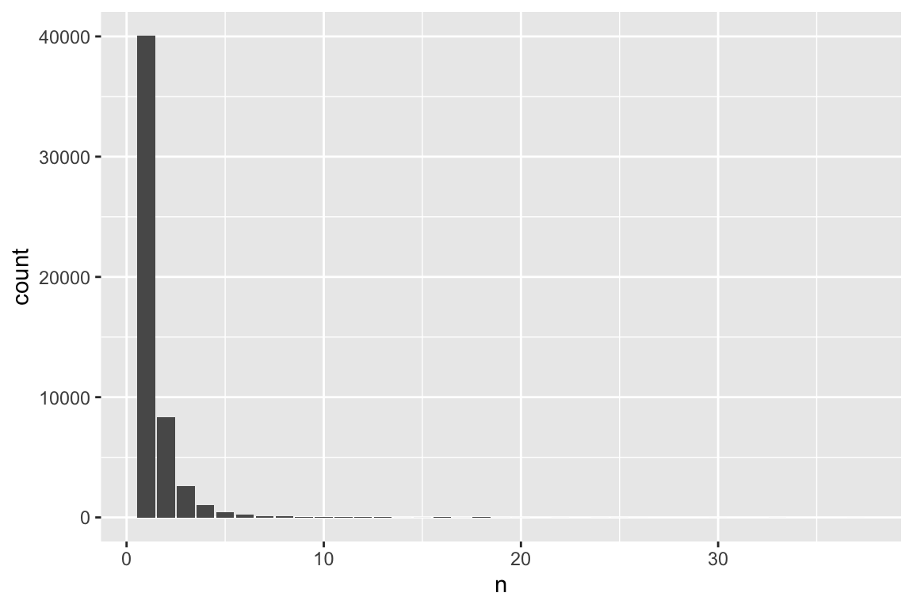
Most people only have one time ICU stay, about 40000 people.
- For each
subject_id, let’s only keep the first ICU stay in the tibbleicustays_tble. (Hint:slice_minandslice_maxmay take long. Think alternative ways to achieve the same function.)
icustays_tble <- icustays_tble %>%
group_by(subject_id, ) %>%
arrange(intime) %>%
filter(row_number() == 1) %>%
print(width = Inf)# A tibble: 53,150 × 8
# Groups: subject_id [53,150]
subject_id hadm_id stay_id first_careunit
<dbl> <dbl> <dbl> <chr>
1 18106347 24305596 30588857 Cardiac Vascular Intensive Care Unit (CVICU)
2 17195991 23542772 38319097 Surgical Intensive Care Unit (SICU)
3 16284044 23864737 36817845 Cardiac Vascular Intensive Care Unit (CVICU)
4 18122666 23883987 39753527 Medical/Surgical Intensive Care Unit (MICU/SICU)
5 18780420 28977824 32140208 Neuro Surgical Intensive Care Unit (Neuro SICU)
6 15092543 28768907 38339174 Neuro Intermediate
7 13201095 28453791 39953418 Coronary Care Unit (CCU)
8 12770182 20446666 34901199 Medical Intensive Care Unit (MICU)
9 12224263 23294937 37546608 Trauma SICU (TSICU)
10 19564586 22461053 37310703 Coronary Care Unit (CCU)
last_careunit intime
<chr> <dttm>
1 Cardiac Vascular Intensive Care Unit (CVICU) 2110-01-11 10:16:06
2 Surgical Intensive Care Unit (SICU) 2110-01-12 00:54:00
3 Cardiac Vascular Intensive Care Unit (CVICU) 2110-01-13 09:09:40
4 Medical/Surgical Intensive Care Unit (MICU/SICU) 2110-01-14 07:22:00
5 Neuro Surgical Intensive Care Unit (Neuro SICU) 2110-01-17 00:28:00
6 Neuro Intermediate 2110-01-17 22:49:13
7 Coronary Care Unit (CCU) 2110-01-18 14:46:27
8 Medical Intensive Care Unit (MICU) 2110-01-18 17:47:47
9 Trauma SICU (TSICU) 2110-01-20 14:01:00
10 Coronary Care Unit (CCU) 2110-01-20 21:06:30
outtime los
<dttm> <dbl>
1 2110-01-12 17:17:47 1.29
2 2110-01-14 22:07:39 2.88
3 2110-01-15 21:45:33 2.52
4 2110-01-15 13:08:36 1.24
5 2110-01-18 01:21:22 1.04
6 2110-01-18 17:18:51 0.771
7 2110-01-25 12:42:11 6.91
8 2110-01-20 22:25:09 2.19
9 2110-01-21 17:21:26 1.14
10 2110-01-22 16:08:24 1.79
# … with 53,140 more rows3 Q3. admission data
Information of the patients admitted into hospital is available in admissions.csv.gz. See https://mimic.mit.edu/docs/iv/modules/hosp/admissions/ for details of each field in this file. The first 10 lines are
system(
str_c(
"zcat < ",
str_c(mimic_path, "/core/admissions.csv.gz"),
" | head"
),
intern = TRUE
) [1] "subject_id,hadm_id,admittime,dischtime,deathtime,admission_type,admission_location,discharge_location,insurance,language,marital_status,ethnicity,edregtime,edouttime,hospital_expire_flag"
[2] "14679932,21038362,2139-09-26 14:16:00,2139-09-28 11:30:00,,ELECTIVE,,HOME,Other,ENGLISH,SINGLE,UNKNOWN,,,0"
[3] "15585972,24941086,2123-10-07 23:56:00,2123-10-12 11:22:00,,ELECTIVE,,HOME,Other,ENGLISH,,WHITE,,,0"
[4] "11989120,21965160,2147-01-14 09:00:00,2147-01-17 14:25:00,,ELECTIVE,,HOME,Other,ENGLISH,,UNKNOWN,,,0"
[5] "17817079,24709883,2165-12-27 17:33:00,2165-12-31 21:18:00,,ELECTIVE,,HOME,Other,ENGLISH,,OTHER,,,0"
[6] "15078341,23272159,2122-08-28 08:48:00,2122-08-30 12:32:00,,ELECTIVE,,HOME,Other,ENGLISH,,BLACK/AFRICAN AMERICAN,,,0"
[7] "19124609,20517215,2169-03-14 12:44:00,2169-03-20 19:15:00,,ELECTIVE,,HOME,Other,ENGLISH,,UNKNOWN,,,0"
[8] "17301855,29732723,2140-06-06 14:23:00,2140-06-08 14:25:00,,ELECTIVE,,HOME,Other,ENGLISH,,WHITE,,,0"
[9] "17991012,24298836,2181-07-10 20:28:00,2181-07-12 15:49:00,,ELECTIVE,,HOME,Other,ENGLISH,,WHITE,,,0"
[10] "16865435,23216961,2185-07-19 02:12:00,2185-07-21 11:50:00,,ELECTIVE,,HOME,Other,ENGLISH,,WHITE,,,0" - Import
admissions.csv.gzas a tibbleadmissions_tble.
admissions_tble = read_csv(str_c(mimic_path, "/core/admissions.csv.gz"))
head(admissions_tble)# A tibble: 6 × 15
subject_id hadm_id admittime dischtime deathtime
<dbl> <dbl> <dttm> <dttm> <dttm>
1 14679932 2.10e7 2139-09-26 14:16:00 2139-09-28 11:30:00 NA
2 15585972 2.49e7 2123-10-07 23:56:00 2123-10-12 11:22:00 NA
3 11989120 2.20e7 2147-01-14 09:00:00 2147-01-17 14:25:00 NA
4 17817079 2.47e7 2165-12-27 17:33:00 2165-12-31 21:18:00 NA
5 15078341 2.33e7 2122-08-28 08:48:00 2122-08-30 12:32:00 NA
6 19124609 2.05e7 2169-03-14 12:44:00 2169-03-20 19:15:00 NA
# … with 10 more variables: admission_type <chr>, admission_location <chr>,
# discharge_location <chr>, insurance <chr>, language <chr>,
# marital_status <chr>, ethnicity <chr>, edregtime <dttm>, edouttime <dttm>,
# hospital_expire_flag <dbl>- Let’s only keep the admissions that have a match in
icustays_tbleaccording tosubject_idandhadmi_id.
admissions_tble <-
admissions_tble %>%
semi_join(icustays_tble, by = c("subject_id", "hadm_id")) %>%
print(width = Inf)# A tibble: 53,150 × 15
subject_id hadm_id admittime dischtime
<dbl> <dbl> <dttm> <dttm>
1 10222255 28200985 2120-11-20 20:25:00 2120-11-22 13:00:00
2 14485852 28712010 2113-10-31 00:23:00 2113-11-04 16:50:00
3 18709254 23758948 2195-10-12 01:31:00 2195-10-12 13:51:00
4 16837807 23526268 2151-03-19 06:09:00 2151-03-19 07:20:00
5 17642680 27734285 2116-05-29 12:48:00 2116-05-30 12:31:00
6 18230965 21251728 2142-03-12 20:00:00 2142-03-17 15:26:00
7 17374121 27667114 2115-07-22 07:15:00 2115-07-24 17:50:00
8 13346506 28533404 2181-11-19 14:32:00 2181-11-22 18:47:00
9 18030332 24679656 2152-07-22 21:28:00 2152-07-27 16:49:00
10 14328744 29576470 2126-08-20 09:26:00 2126-08-21 11:36:00
deathtime admission_type admission_location
<dttm> <chr> <chr>
1 NA EU OBSERVATION TRANSFER FROM HOSPITAL
2 NA EW EMER. EMERGENCY ROOM
3 NA EU OBSERVATION EMERGENCY ROOM
4 2151-03-19 07:20:00 EU OBSERVATION EMERGENCY ROOM
5 NA EU OBSERVATION WALK-IN/SELF REFERRAL
6 NA URGENT PHYSICIAN REFERRAL
7 NA DIRECT OBSERVATION PHYSICIAN REFERRAL
8 NA EU OBSERVATION EMERGENCY ROOM
9 NA URGENT TRANSFER FROM HOSPITAL
10 NA EU OBSERVATION EMERGENCY ROOM
discharge_location insurance language marital_status ethnicity
<chr> <chr> <chr> <chr> <chr>
1 <NA> Other ENGLISH MARRIED WHITE
2 <NA> Other ENGLISH SINGLE WHITE
3 <NA> Medicaid ENGLISH WIDOWED ASIAN
4 <NA> Medicare ENGLISH SINGLE WHITE
5 <NA> Other ENGLISH SINGLE WHITE
6 HOME Other ENGLISH MARRIED WHITE
7 <NA> Other ENGLISH MARRIED WHITE
8 <NA> Other ENGLISH MARRIED WHITE
9 HOME Other ENGLISH MARRIED UNKNOWN
10 <NA> Other ENGLISH MARRIED WHITE
edregtime edouttime hospital_expire_flag
<dttm> <dttm> <dbl>
1 2120-11-20 18:07:00 2120-11-21 20:25:00 0
2 2113-10-30 19:48:00 2113-10-31 05:10:00 0
3 2195-10-11 18:40:00 2195-10-12 02:47:00 0
4 2151-03-19 02:55:00 2151-03-19 06:59:00 1
5 2116-05-29 10:05:00 2116-05-30 01:17:00 0
6 NA NA 0
7 NA NA 0
8 2181-11-19 10:51:00 2181-11-19 15:12:00 0
9 NA NA 0
10 2126-08-19 23:01:00 2126-08-20 10:14:00 0
# … with 53,140 more rows- Summarize the following variables by graphics.
- admission year
#admission year
admissions_tble$admittime <- ymd_hms(admissions_tble$admittime)
admissions_tble %>%
mutate(year = year(admittime), label = TRUE) %>%
ggplot(aes(x = year)) +
geom_bar()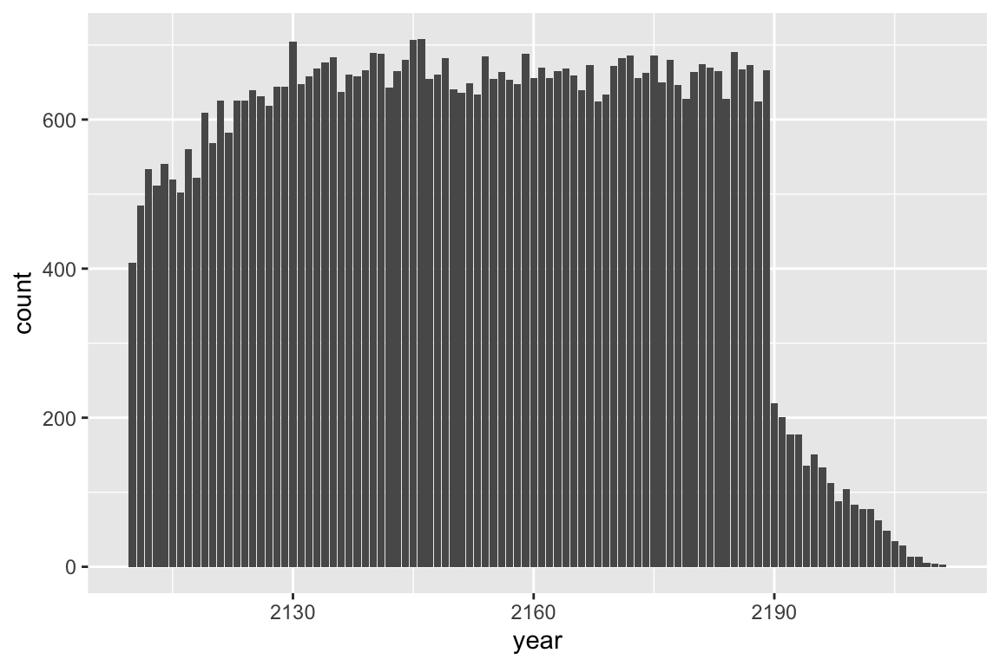
The number drops apparently after year 2190.
- admission month
admissions_tble %>%
mutate(month = month(admittime), label = TRUE) %>%
ggplot(aes(x = month)) +
geom_bar()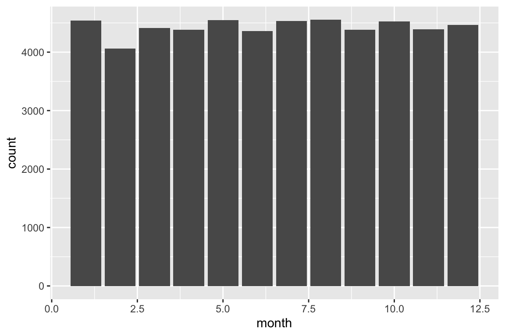
It seems similar in each admission month.
- admission month day
admissions_tble %>%
mutate(mday = mday(admittime), label = TRUE) %>%
ggplot(aes(x = mday)) +
geom_bar()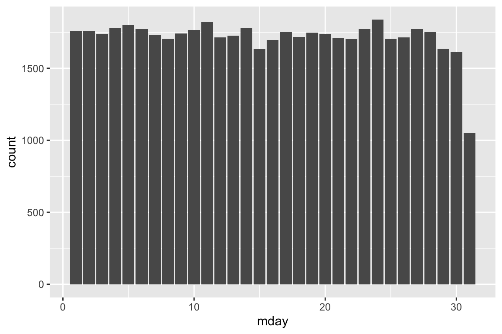
It seems similar in each admission month day.
- admission week day
admissions_tble %>%
mutate(wday = wday(admittime), label = TRUE) %>%
ggplot(aes(x = wday)) +
geom_bar()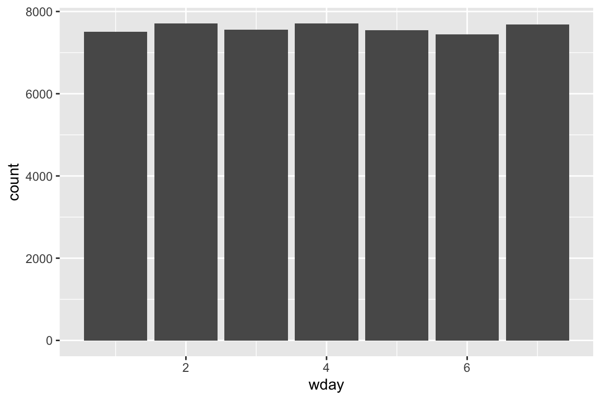
It seems similar in each admission week day.
- admission hour (anything unusual?)
admissions_tble %>%
mutate(hour = hour(admittime), label = TRUE) %>%
ggplot(aes(x = hour)) +
geom_bar()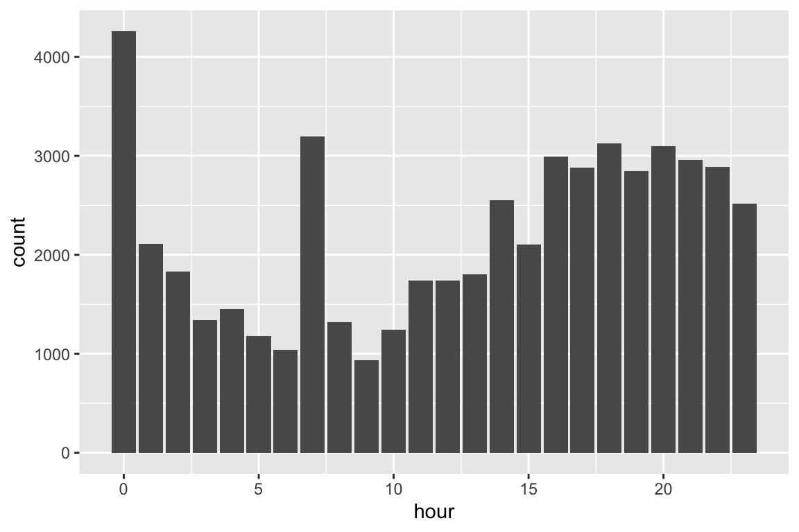
There are some pattern. 0 and 7 have more counts than others. 0 may be that if they just replace missing number as 0. And hospital might open at 7 am. - admission minute (anything unusual?)
admissions_tble %>%
mutate(minute = minute(admittime), label = TRUE) %>%
ggplot(aes(x = minute)) +
geom_bar()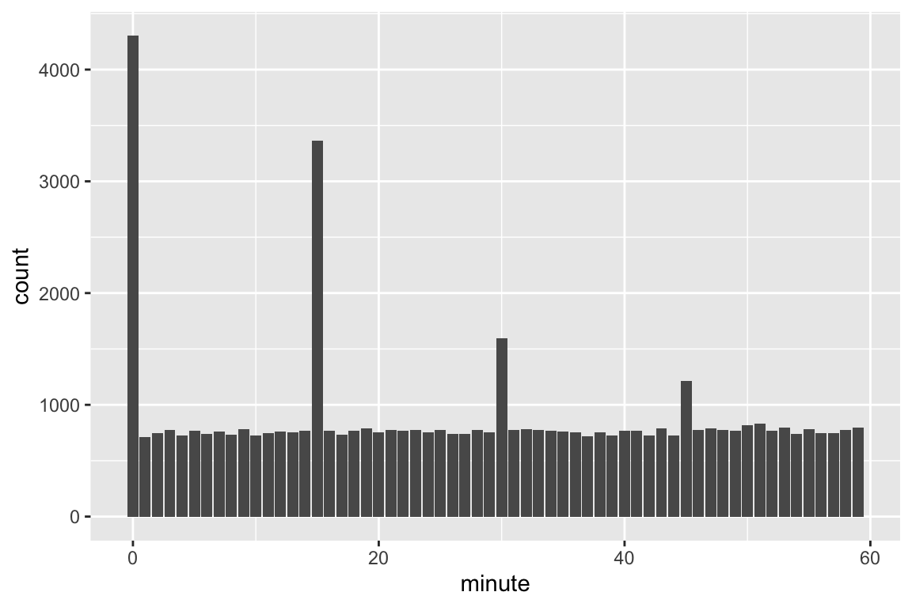
0 min 15 min 30min and 45min has much more counts. I think it is because people do this intentionally.
- length of hospital stay (anything unusual?)
admissions_tble %>%
mutate(length = as.numeric(admissions_tble$dischtime - admissions_tble$admittime) /
3600) %>%
ggplot(aes(x = length)) +
geom_bar() +
coord_cartesian(xlim = c(0, 50))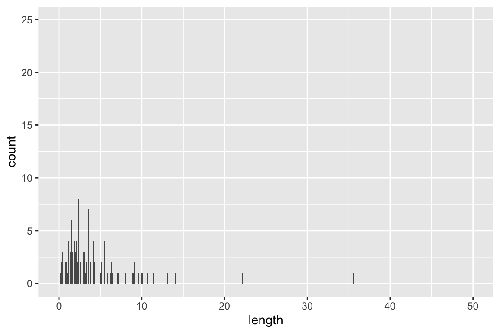
Most patients only stay at hospital less than 10 days. ## Q4. patients data
Patient information is available in patients.csv.gz. See https://mimic.mit.edu/docs/iv/modules/hosp/patients/ for details of each field in this file. The first 10 lines are
system(
str_c(
"zcat < ",
str_c(mimic_path, "/core/patients.csv.gz"),
" | head"
),
intern = TRUE
) [1] "subject_id,gender,anchor_age,anchor_year,anchor_year_group,dod"
[2] "10000048,F,23,2126,2008 - 2010,"
[3] "10002723,F,0,2128,2017 - 2019,"
[4] "10003939,M,0,2184,2008 - 2010,"
[5] "10004222,M,0,2161,2014 - 2016,"
[6] "10005325,F,0,2154,2011 - 2013,"
[7] "10007338,F,0,2153,2017 - 2019,"
[8] "10008101,M,0,2142,2008 - 2010,"
[9] "10009872,F,0,2168,2014 - 2016,"
[10] "10011333,F,0,2132,2014 - 2016," - Import
patients.csv.gz(https://mimic.mit.edu/docs/iv/modules/hosp/patients/) as a tibblepatients_tbleand only keep the patients who have a match inicustays_tble(according tosubject_id).
patients_tble <- read_csv(str_c(mimic_path, "/core/patients.csv.gz"))
patients_tble <-
patients_tble %>%
semi_join(icustays_tble, by = "subject_id") %>%
print(width = Inf)# A tibble: 53,150 × 6
subject_id gender anchor_age anchor_year anchor_year_group dod
<dbl> <chr> <dbl> <dbl> <chr> <date>
1 10018928 F 31 2125 2008 - 2010 NA
2 10076543 F 78 2187 2008 - 2010 NA
3 10098428 F 85 2119 2008 - 2010 NA
4 10127185 M 60 2141 2008 - 2010 NA
5 10148710 M 67 2137 2008 - 2010 NA
6 10156486 F 75 2124 2017 - 2019 NA
7 10159585 M 59 2146 2008 - 2010 2154-04-16
8 10171525 F 27 2115 2014 - 2016 NA
9 10196360 M 57 2118 2011 - 2013 NA
10 10227823 M 45 2156 2014 - 2016 NA
# … with 53,140 more rows- Summarize variables
genderandanchor_age, and explain any patterns you see.
gender
patients_tble %>%
ggplot(mapping = aes(x = gender, fill = gender)) +
geom_bar(width = 1)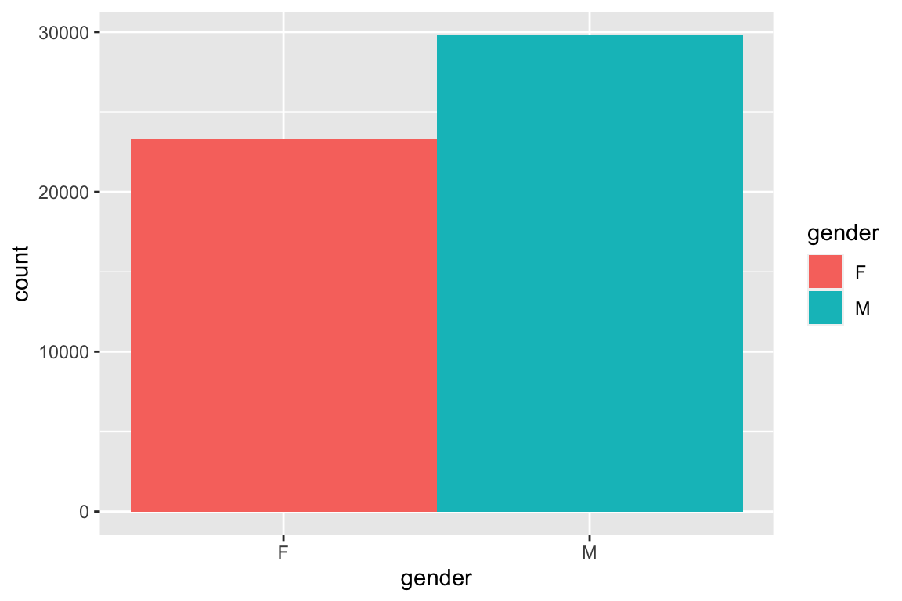
There are more male than female.
anchor_age
patients_tble %>%
ggplot(mapping = aes(x = anchor_age, fill = anchor_age)) +
geom_bar(width = 1)Warning: The following aesthetics were dropped during statistical transformation: fill
ℹ This can happen when ggplot fails to infer the correct grouping structure in
the data.
ℹ Did you forget to specify a `group` aesthetic or to convert a numerical
variable into a factor?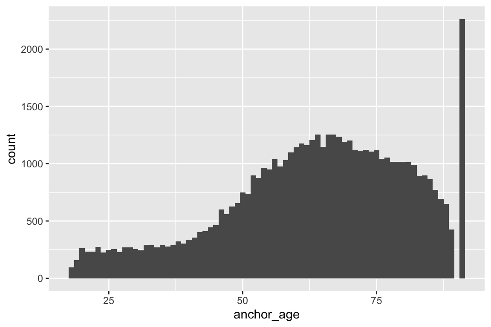
It is strange that there are much more people are 91 years old. I guess it’s because they mark patients who are older than 91 year old as 91 in the data. ## Q5. Lab results
labevents.csv.gz (https://mimic.mit.edu/docs/iv/modules/hosp/labevents/) contains all laboratory measurements for patients. The first 10 lines are
system(
str_c(
"zcat < ",
str_c(mimic_path, "/hosp/labevents.csv.gz"),
" | head"
),
intern = TRUE
) [1] "labevent_id,subject_id,hadm_id,specimen_id,itemid,charttime,storetime,value,valuenum,valueuom,ref_range_lower,ref_range_upper,flag,priority,comments"
[2] "670,10000048,,6448755,51484,2126-11-22 19:20:00,2126-11-22 20:07:00,150,150,mg/dL,,,,STAT,"
[3] "673,10000048,,6448755,51491,2126-11-22 19:20:00,2126-11-22 20:07:00,6.5,6.5,units,5,8,,STAT,"
[4] "675,10000048,,6448755,51498,2126-11-22 19:20:00,2126-11-22 20:07:00,1.029,1.029, ,1.001,1.035,,STAT,"
[5] "683,10000048,,82729055,50861,2126-11-22 20:45:00,2126-11-23 00:55:00,39,39,IU/L,0,40,,STAT,"
[6] "684,10000048,,82729055,50862,2126-11-22 20:45:00,2126-11-23 00:55:00,4.7,4.7,g/dL,3.4,4.8,,STAT,"
[7] "685,10000048,,82729055,50863,2126-11-22 20:45:00,2126-11-23 00:55:00,45,45,IU/L,39,117,,STAT,"
[8] "686,10000048,,82729055,50868,2126-11-22 20:45:00,2126-11-22 21:32:00,13,13,mEq/L,8,20,,STAT,"
[9] "687,10000048,,82729055,50878,2126-11-22 20:45:00,2126-11-23 00:55:00,28,28,IU/L,0,40,,STAT,"
[10] "688,10000048,,82729055,50882,2126-11-22 20:45:00,2126-11-22 21:32:00,26,26,mEq/L,22,32,,STAT," d_labitems.csv.gz is the dictionary of lab measurements.
system(
str_c(
"zcat < ",
str_c(mimic_path, "/hosp/d_labitems.csv.gz"),
" | head"
),
intern = TRUE
) [1] "itemid,label,fluid,category,loinc_code"
[2] "51905, ,Other Body Fluid,Chemistry,"
[3] "51532,11-Deoxycorticosterone,Blood,Chemistry,"
[4] "51957,17-Hydroxycorticosteroids,Urine,Chemistry,"
[5] "51958,\"17-Ketosteroids, Urine\",Urine,Chemistry,"
[6] "52068,24 Hr,Blood,Hematology,"
[7] "51066,24 hr Calcium,Urine,Chemistry,"
[8] "51067,24 hr Creatinine,Urine,Chemistry,"
[9] "51068,24 hr Protein,Urine,Chemistry,"
[10] "50853,25-OH Vitamin D,Blood,Chemistry," - Find how many rows are in
labevents.csv.gz.
system(
str_c(
"zcat < ",
str_c(mimic_path, "/hosp/labevents.csv.gz"),
" | tail -n +2 | wc -l"
),
intern = TRUE
)[1] " 122103667"There are 122103667 rows in labevents.csv.gz.
- We are interested in the lab measurements of creatinine (50912), potassium (50971), sodium (50983), chloride (50902), bicarbonate (50882), hematocrit (51221), white blood cell count (51301), and glucose (50931). Retrieve a subset of
labevents.csv.gzonly containing these items for the patients inicustays_tbleas a tibblelabevents_tble.
labevents <-
read_csv(str_c(mimic_path, "/hosp/labevents_filtered_itemid.csv.gz"),
lazy = T)
measure <- c(
"50912",
"50971",
"50983",
"50902",
"50882",
"51221",
"51301",
"50931",
"50960",
"50893"
)
d_labitems_tble <-
read_csv(str_c(mimic_path, "/hosp/d_labitems.csv.gz"))
labevents_tble <-
labevents %>%
semi_join(icustays_tble, by = c("subject_id")) %>%
filter(itemid %in% measure)
labevents_tble# A tibble: 16,698,462 × 4
subject_id itemid charttime valuenum
<dbl> <dbl> <dttm> <dbl>
1 10003700 50882 2162-11-15 17:00:00 27
2 10003700 50902 2162-11-15 17:00:00 103
3 10003700 50912 2162-11-15 17:00:00 1
4 10003700 50931 2162-11-15 17:00:00 93
5 10003700 50971 2162-11-15 17:00:00 4.1
6 10003700 50983 2162-11-15 17:00:00 141
7 10003700 51221 2162-11-15 17:00:00 40
8 10003700 51301 2162-11-15 17:00:00 6.7
9 10003700 51221 2165-04-24 03:40:00 41
10 10003700 51301 2165-04-24 03:40:00 5.8
# … with 16,698,452 more rowsHint: labevents.csv.gz is a data file too big to be read in by the read_csv function in its default setting. Utilize the col_select option in the read_csv function to reduce the memory burden. It took my computer 5-10 minutes to ingest this file. If your computer really has trouble importing labevents.csv.gz, you can import from the reduced data file labevents_filtered_itemid.csv.gz.
- Further restrict
labevents_tbleto the first lab measurement during the ICU stay.
labevents_tble <- labevents_tble %>%
left_join(select(icustays_tble, subject_id, intime, outtime),
by = c("subject_id")) %>%
filter(charttime >= intime, charttime <= outtime) %>%
group_by(subject_id, itemid) %>%
arrange(charttime, .by_group = TRUE) %>%
slice_head(n = 1) %>%
ungroup() %>%
print(width = Inf)# A tibble: 509,822 × 6
subject_id itemid charttime valuenum intime
<dbl> <dbl> <dttm> <dbl> <dttm>
1 10000032 50882 2180-07-23 21:45:00 21 2180-07-23 14:00:00
2 10000032 50893 2180-07-23 21:45:00 9.3 2180-07-23 14:00:00
3 10000032 50902 2180-07-23 21:45:00 102 2180-07-23 14:00:00
4 10000032 50912 2180-07-23 21:45:00 0.5 2180-07-23 14:00:00
5 10000032 50931 2180-07-23 21:45:00 115 2180-07-23 14:00:00
6 10000032 50960 2180-07-23 21:45:00 2.3 2180-07-23 14:00:00
7 10000032 50971 2180-07-23 21:45:00 4.7 2180-07-23 14:00:00
8 10000032 50983 2180-07-23 21:45:00 132 2180-07-23 14:00:00
9 10001217 50882 2157-11-21 03:16:00 23 2157-11-20 19:18:02
10 10001217 50893 2157-11-21 03:16:00 8.2 2157-11-20 19:18:02
outtime
<dttm>
1 2180-07-23 23:50:47
2 2180-07-23 23:50:47
3 2180-07-23 23:50:47
4 2180-07-23 23:50:47
5 2180-07-23 23:50:47
6 2180-07-23 23:50:47
7 2180-07-23 23:50:47
8 2180-07-23 23:50:47
9 2157-11-21 22:08:00
10 2157-11-21 22:08:00
# … with 509,812 more rows- Summarize the lab measurements by appropriate numerics and graphics.
###summarize the lab measurements (numerics): ###
d_labitems_tble <-
read_csv(str_c(mimic_path, "/hosp/d_labitems.csv.gz"))
labevents_tble1 <-
labevents_tble %>% left_join(select(d_labitems_tble, itemid, label),
by = c("itemid")) %>%
select(-c(itemid, charttime, intime, outtime)) %>%
pivot_wider(names_from = label, values_from = valuenum) %>%
rename(WBCs = "White Blood Cells")
summary(labevents_tble1[-1]) Bicarbonate Calcium, Total Chloride Creatinine
Min. : 2.00 Min. : 0.000 Min. : 58.0 Min. : 0.000
1st Qu.:21.00 1st Qu.: 7.900 1st Qu.:101.0 1st Qu.: 0.700
Median :23.00 Median : 8.400 Median :105.0 Median : 0.900
Mean :22.96 Mean : 8.349 Mean :104.5 Mean : 1.311
3rd Qu.:25.00 3rd Qu.: 8.800 3rd Qu.:108.0 3rd Qu.: 1.300
Max. :49.00 Max. :43.000 Max. :153.0 Max. :36.900
NA's :278 NA's :2810 NA's :238 NA's :257
Glucose Magnesium Potassium Sodium
Min. : 7.0 Min. : 0.000 Min. : 0.800 Min. : 92.0
1st Qu.: 103.0 1st Qu.: 1.700 1st Qu.: 3.700 1st Qu.:136.0
Median : 124.0 Median : 2.000 Median : 4.100 Median :139.0
Mean : 141.4 Mean : 2.001 Mean : 4.178 Mean :138.5
3rd Qu.: 156.0 3rd Qu.: 2.200 3rd Qu.: 4.500 3rd Qu.:141.0
Max. :2440.0 Max. :47.000 Max. :13.000 Max. :180.0
NA's :354 NA's :1340 NA's :264 NA's :232
Hematocrit WBCs
Min. : 4.30 Min. : 0.00
1st Qu.:28.10 1st Qu.: 7.60
Median :32.60 Median : 10.60
Mean :32.74 Mean : 12.07
3rd Qu.:37.30 3rd Qu.: 14.50
Max. :68.60 Max. :572.50
NA's :504 NA's :627 ###summarize the lab measurements (graphic): ###
Bic <-
labevents_tble1 %>%
ggplot(mapping = aes(x = " ",
y = Bicarbonate)) +
geom_boxplot(outlier.shape = NA) +
coord_cartesian(ylim = quantile(labevents_tble1$Bicarbonate,
c(0.05, 0.95),
na.rm = T)) +
theme(
axis.title.x = element_blank(),
axis.text.x = element_blank(),
axis.ticks.x = element_blank()
)
Cal <-
labevents_tble1 %>%
ggplot(mapping = aes(x = " ",
y = `Calcium, Total`)) +
geom_boxplot(outlier.shape = NA) +
coord_cartesian(ylim = quantile(labevents_tble1$`Calcium, Total` ,
c(0.05, 0.95),
na.rm = T)) +
theme(
axis.title.x = element_blank(),
axis.text.x = element_blank(),
axis.ticks.x = element_blank()
)
Chl <-
labevents_tble1 %>%
ggplot(mapping = aes(x = " ",
y = Chloride)) +
geom_boxplot(outlier.shape = NA) +
coord_cartesian(ylim = quantile(labevents_tble1$Chloride ,
c(0.05, 0.95),
na.rm = T)) +
theme(
axis.title.x = element_blank(),
axis.text.x = element_blank(),
axis.ticks.x = element_blank()
)
Cre <-
labevents_tble1 %>%
ggplot(mapping = aes(x = " ",
y = Creatinine)) +
geom_boxplot(outlier.shape = NA) +
coord_cartesian(ylim = quantile(labevents_tble1$Creatinine ,
c(0.05, 0.95),
na.rm = T)) +
theme(
axis.title.x = element_blank(),
axis.text.x = element_blank(),
axis.ticks.x = element_blank()
)
Glu <-
labevents_tble1 %>%
ggplot(mapping = aes(x = " ",
y = Glucose)) +
geom_boxplot(outlier.shape = NA) +
coord_cartesian(ylim = quantile(labevents_tble1$Glucose ,
c(0.05, 0.95),
na.rm = T)) +
theme(
axis.title.x = element_blank(),
axis.text.x = element_blank(),
axis.ticks.x = element_blank()
)
Mag <-
labevents_tble1 %>%
ggplot(mapping = aes(x = " ",
y = Magnesium)) +
geom_boxplot(outlier.shape = NA) +
coord_cartesian(ylim = quantile(labevents_tble1$Magnesium ,
c(0.05, 0.95),
na.rm = T)) +
theme(
axis.title.x = element_blank(),
axis.text.x = element_blank(),
axis.ticks.x = element_blank()
)
Pot <-
labevents_tble1 %>%
ggplot(mapping = aes(x = " ",
y = Potassium)) +
geom_boxplot(outlier.shape = NA) +
coord_cartesian(ylim = quantile(labevents_tble1$Potassium,
c(0.05, 0.95),
na.rm = T)) +
theme(
axis.title.x = element_blank(),
axis.text.x = element_blank(),
axis.ticks.x = element_blank()
)
Sod <-
labevents_tble1 %>%
ggplot(mapping = aes(x = " ",
y = Sodium)) +
geom_boxplot(outlier.shape = NA) +
coord_cartesian(ylim = quantile(labevents_tble1$Sodium,
c(0.05, 0.95),
na.rm = T)) +
theme(
axis.title.x = element_blank(),
axis.text.x = element_blank(),
axis.ticks.x = element_blank()
)
Hem <-
labevents_tble1 %>%
ggplot(mapping = aes(x = " ",
y = Hematocrit)) +
geom_boxplot(outlier.shape = NA) +
coord_cartesian(ylim = quantile(labevents_tble1$Hematocrit,
c(0.05, 0.95),
na.rm = T)) +
theme(
axis.title.x = element_blank(),
axis.text.x = element_blank(),
axis.ticks.x = element_blank()
)
WBC <-
labevents_tble1 %>%
ggplot(mapping = aes(x = " ",
y = WBCs)) +
geom_boxplot(outlier.shape = NA) +
coord_cartesian(ylim = quantile(labevents_tble1$WBCs,
c(0.05, 0.95),
na.rm = T)) +
theme(
axis.title.x = element_blank(),
axis.text.x = element_blank(),
axis.ticks.x = element_blank()
)
library(gridExtra)
grid.arrange(Bic, Cal, Chl, Cre, Glu, Mag, Pot, Sod, Hem, WBC)Warning: Removed 278 rows containing non-finite values (`stat_boxplot()`).Warning: Removed 2810 rows containing non-finite values (`stat_boxplot()`).Warning: Removed 238 rows containing non-finite values (`stat_boxplot()`).Warning: Removed 257 rows containing non-finite values (`stat_boxplot()`).Warning: Removed 354 rows containing non-finite values (`stat_boxplot()`).Warning: Removed 1340 rows containing non-finite values (`stat_boxplot()`).Warning: Removed 264 rows containing non-finite values (`stat_boxplot()`).Warning: Removed 232 rows containing non-finite values (`stat_boxplot()`).Warning: Removed 504 rows containing non-finite values (`stat_boxplot()`).Warning: Removed 627 rows containing non-finite values (`stat_boxplot()`).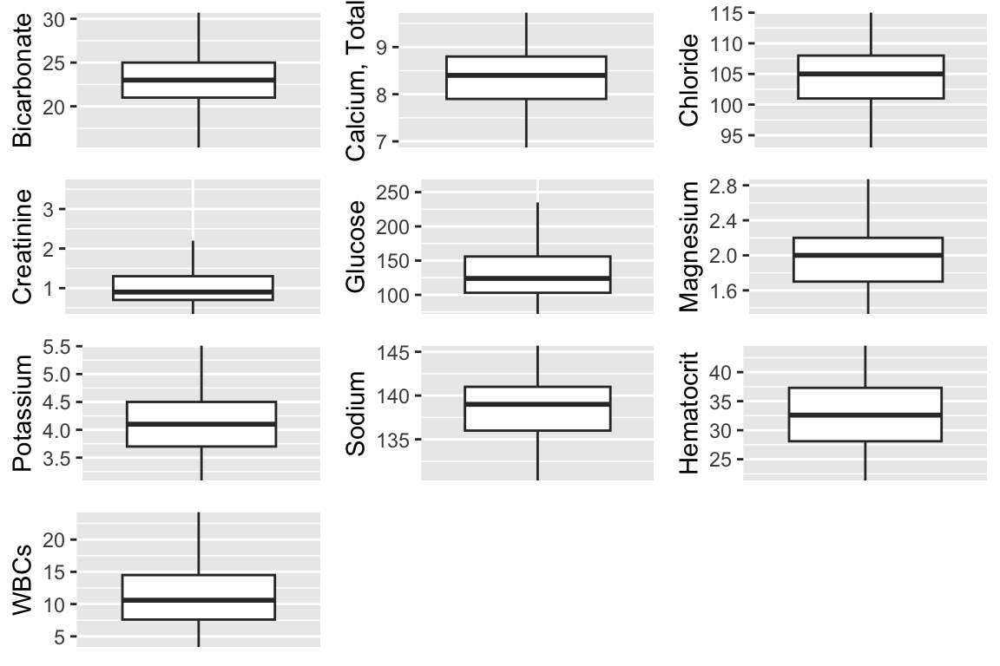
4 Q6. Vitals from charted events
chartevents.csv.gz (https://mimic.mit.edu/docs/iv/modules/icu/chartevents/) contains all the charted data available for a patient. During their ICU stay, the primary repository of a patient’s information is their electronic chart. The itemid variable indicates a single measurement type in the database. The value variable is the value measured for itemid. The first 10 lines of chartevents.csv.gz are
system(
str_c(
"zcat < ",
str_c(mimic_path, "/icu/chartevents.csv.gz"),
" | head"),
intern = TRUE
) [1] "subject_id,hadm_id,stay_id,charttime,storetime,itemid,value,valuenum,valueuom,warning"
[2] "10003700,28623837,30600691,2165-04-24 05:10:00,2165-04-24 05:11:00,228236,0,0,,0"
[3] "10003700,28623837,30600691,2165-04-24 05:12:00,2165-04-24 05:14:00,225067,0,0,,0"
[4] "10003700,28623837,30600691,2165-04-24 05:12:00,2165-04-24 05:14:00,225070,1,1,,0"
[5] "10003700,28623837,30600691,2165-04-24 05:12:00,2165-04-24 05:14:00,225076,1,1,,0"
[6] "10003700,28623837,30600691,2165-04-24 05:12:00,2165-04-24 05:14:00,225078,1,1,,0"
[7] "10003700,28623837,30600691,2165-04-24 05:12:00,2165-04-24 05:14:00,225086,1,1,,0"
[8] "10003700,28623837,30600691,2165-04-24 05:12:00,2165-04-24 05:14:00,225091,1,1,,0"
[9] "10003700,28623837,30600691,2165-04-24 05:12:00,2165-04-24 05:14:00,225103,1,1,,0"
[10] "10003700,28623837,30600691,2165-04-24 05:12:00,2165-04-24 05:14:00,225106,1,1,,0" d_items.csv.gz (https://mimic.mit.edu/docs/iv/modules/icu/d_items/) is the dictionary for the itemid in chartevents.csv.gz.
system(
str_c(
"zcat < ",
str_c(mimic_path, "/icu/d_items.csv.gz"),
" | head"),
intern = TRUE
) [1] "itemid,label,abbreviation,linksto,category,unitname,param_type,lownormalvalue,highnormalvalue"
[2] "220003,ICU Admission date,ICU Admission date,datetimeevents,ADT,,Date and time,,"
[3] "220045,Heart Rate,HR,chartevents,Routine Vital Signs,bpm,Numeric,,"
[4] "220046,Heart rate Alarm - High,HR Alarm - High,chartevents,Alarms,bpm,Numeric,,"
[5] "220047,Heart Rate Alarm - Low,HR Alarm - Low,chartevents,Alarms,bpm,Numeric,,"
[6] "220048,Heart Rhythm,Heart Rhythm,chartevents,Routine Vital Signs,,Text,,"
[7] "220050,Arterial Blood Pressure systolic,ABPs,chartevents,Routine Vital Signs,mmHg,Numeric,90,140"
[8] "220051,Arterial Blood Pressure diastolic,ABPd,chartevents,Routine Vital Signs,mmHg,Numeric,60,90"
[9] "220052,Arterial Blood Pressure mean,ABPm,chartevents,Routine Vital Signs,mmHg,Numeric,,"
[10] "220056,Arterial Blood Pressure Alarm - Low,ABP Alarm - Low,chartevents,Alarms,mmHg,Numeric,," - We are interested in the vitals for ICU patients: heart rate (220045), mean non-invasive blood pressure (220181), systolic non-invasive blood pressure (220179), body temperature in Fahrenheit (223761), and respiratory rate (220210). Retrieve a subset of
chartevents.csv.gzonly containing these items for the patients inicustays_tbleas a tibblechartevents_tble.
chartevents <-
read_csv(str_c(mimic_path, "/icu/chartevents_filtered_itemid.csv.gz"))
vitals <- c("220045", "220181", "220179", "223761", "220210")
chartevents_tble <-
chartevents %>%
semi_join(icustays_tble, by = "subject_id") %>%
filter(itemid %in% vitals)
chartevents_tble# A tibble: 23,679,058 × 6
subject_id hadm_id stay_id charttime itemid valuenum
<dbl> <dbl> <dbl> <dttm> <dbl> <dbl>
1 10003700 28623837 30600691 2165-04-24 05:28:00 220179 152
2 10003700 28623837 30600691 2165-04-24 05:28:00 220181 110
3 10003700 28623837 30600691 2165-04-24 05:30:00 220045 65
4 10003700 28623837 30600691 2165-04-24 05:30:00 220210 14
5 10003700 28623837 30600691 2165-04-24 05:38:00 223761 97.6
6 10003700 28623837 30600691 2165-04-24 06:00:00 220045 56
7 10003700 28623837 30600691 2165-04-24 06:00:00 220179 126
8 10003700 28623837 30600691 2165-04-24 06:00:00 220181 88
9 10003700 28623837 30600691 2165-04-24 06:00:00 220210 14
10 10003700 28623837 30600691 2165-04-24 06:09:00 220045 55
# … with 23,679,048 more rowsHint: chartevents.csv.gz is a data file too big to be read in by the read_csv function in its default setting. Utilize the col_select option in the read_csv function to reduce the memory burden. It took my computer >15 minutes to ingest this file. If your computer really has trouble importing chartevents.csv.gz, you can import from the reduced data file chartevents_filtered_itemid.csv.gz.
- Further restrict
chartevents_tbleto the first vital measurement during the ICU stay.
chartevents_tble <- chartevents_tble %>%
left_join(select(icustays_tble, subject_id, intime, outtime),
by = c("subject_id")) %>%
filter(charttime >= intime, charttime <= outtime) %>%
group_by(subject_id, itemid) %>%
arrange(charttime, .by_group = TRUE) %>%
slice_head(n = 1) %>%
ungroup()
chartevents_tble# A tibble: 263,332 × 8
subject_id hadm_id stay_id charttime itemid valuenum
<dbl> <dbl> <dbl> <dttm> <dbl> <dbl>
1 10000032 29079034 39553978 2180-07-23 14:12:00 220045 91
2 10000032 29079034 39553978 2180-07-23 14:11:00 220179 84
3 10000032 29079034 39553978 2180-07-23 14:11:00 220181 56
4 10000032 29079034 39553978 2180-07-23 14:12:00 220210 24
5 10000032 29079034 39553978 2180-07-23 14:00:00 223761 98.7
6 10000980 26913865 39765666 2189-06-27 08:56:00 220045 77
7 10000980 26913865 39765666 2189-06-27 08:55:00 220179 150
8 10000980 26913865 39765666 2189-06-27 08:55:00 220181 92
9 10000980 26913865 39765666 2189-06-27 08:54:00 220210 23
10 10000980 26913865 39765666 2189-06-27 09:07:00 223761 98
# … with 263,322 more rows, and 2 more variables: intime <dttm>, outtime <dttm>- Summarize these vital measurements by appropriate numerics and graphics.
###summarize the vital measurements (numerics):###
d_items_tble <- read_csv(str_c(mimic_path, "/icu/d_items.csv.gz"))
chartevents_tble1 <-
chartevents_tble %>% left_join(select(d_items_tble, itemid, label),
by = c("itemid")) %>%
select(-c(itemid, charttime, intime, outtime)) %>%
pivot_wider(names_from = label, values_from = valuenum) %>%
rename(
HR = "Heart Rate",
RR = "Respiratory Rate",
BP_mean = "Non Invasive Blood Pressure systolic",
BP_Systolic = "Non Invasive Blood Pressure mean",
TF = "Temperature Fahrenheit"
)
chartevents_tble1 <- chartevents_tble1[, -2]
chartevents_tble1 <- chartevents_tble1[, -2]
summary(chartevents_tble1[-1]) HR BP_mean BP_Systolic RR
Min. : 0.00 Min. : 0.0 Min. : 0.00 Min. : 0.00
1st Qu.: 74.00 1st Qu.: 106.0 1st Qu.: 70.00 1st Qu.: 15.00
Median : 85.00 Median : 122.0 Median : 81.00 Median : 18.00
Mean : 87.47 Mean : 123.8 Mean : 87.42 Mean : 18.69
3rd Qu.: 99.00 3rd Qu.: 139.0 3rd Qu.: 93.00 3rd Qu.: 22.00
Max. :941.00 Max. :12262.0 Max. :140119.00 Max. :180.00
NA's :1 NA's :669 NA's :690 NA's :48
TF
Min. : 0.00
1st Qu.: 97.60
Median : 98.10
Mean : 98.03
3rd Qu.: 98.70
Max. :106.00
NA's :940 ###summarize the lab measurements (graphic):###
HR <-
chartevents_tble1 %>%
ggplot(mapping = aes(x = " ",
y = HR)) +
geom_boxplot(outlier.shape = NA) +
coord_cartesian(ylim = quantile(chartevents_tble1$HR,
c(0.05, 0.95),
na.rm = T))
BP_mean <-
chartevents_tble1 %>%
ggplot(mapping = aes(x = " ",
y = BP_mean)) +
geom_boxplot(outlier.shape = NA) +
coord_cartesian(ylim = quantile(chartevents_tble1$BP_mean,
c(0.05, 0.95),
na.rm = T))
BP_Systolic <-
chartevents_tble1 %>%
ggplot(mapping = aes(x = " ",
y = BP_Systolic)) +
geom_boxplot(outlier.shape = NA) +
coord_cartesian(ylim = quantile(chartevents_tble1$BP_Systolic,
c(0.05, 0.95),
na.rm = T))
RR <- chartevents_tble1 %>%
ggplot(mapping = aes(x = " ",
y = RR)) +
geom_boxplot(outlier.shape = NA) +
coord_cartesian(ylim = quantile(chartevents_tble1$RR,
c(0.05, 0.95),
na.rm = T))
TF <-
chartevents_tble1 %>%
ggplot(mapping = aes(x = " ",
y = TF)) +
geom_boxplot(outlier.shape = NA) +
coord_cartesian(ylim = quantile(chartevents_tble1$TF,
c(0.05, 0.95),
na.rm = T))
grid.arrange(HR, BP_mean, BP_Systolic, TF, RR)Warning: Removed 1 rows containing non-finite values (`stat_boxplot()`).Warning: Removed 669 rows containing non-finite values (`stat_boxplot()`).Warning: Removed 690 rows containing non-finite values (`stat_boxplot()`).Warning: Removed 940 rows containing non-finite values (`stat_boxplot()`).Warning: Removed 48 rows containing non-finite values (`stat_boxplot()`).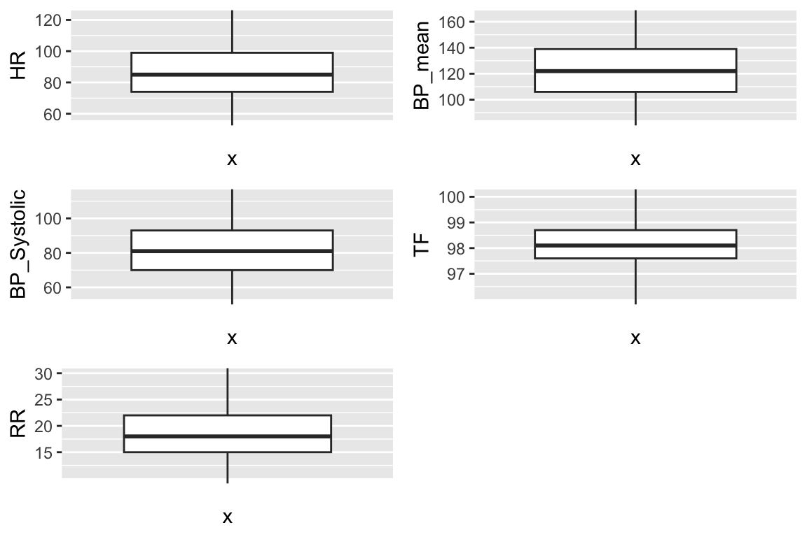
5 Q7. Putting things together
Let us create a tibble mimic_icu_cohort for all ICU stays, where rows are the first ICU stay of each unique adult (age at admission > 18) and columns contain at least following variables
- all variables in
icustays.csv.gz
- all variables in
admission.csv.gz
- all variables in
patients.csv.gz
- first lab measurements during ICU stay
- first vital measurements during ICU stay
- an indicator variable
thirty_day_mortwhether the patient died within 30 days of hospital admission (30 day mortality)
#combine with admission.csv.gz
mimic_icu_cohort <-
icustays_tble %>%
left_join(admissions_tble, by = c("subject_id", "hadm_id"))
#combine with patients.csv.gz
mimic_icu_cohort <-
patients_tble %>%
left_join(mimic_icu_cohort, by = c("subject_id"))
#combine with first lab measurements during ICU stay
mimic_icu_cohort <-
labevents_tble1 %>%
left_join(mimic_icu_cohort, by = c("subject_id"))
#combine with first lab measurements during ICU stay
mimic_icu_cohort <-
chartevents_tble1 %>%
left_join(mimic_icu_cohort, by = c("subject_id"))
#age
mimic_icu_cohort <-
mimic_icu_cohort %>% mutate(age_ad = anchor_age + year(admittime) - anchor_year) %>%
filter(age_ad > 18) %>%
mutate(thirty_day_mort = ifelse(as.Date(deathtime) - as.Date(admittime) > 30,
1, 0)) %>%
print(width = Inf)# A tibble: 51,547 × 43
subject_id HR BP_mean BP_Systolic RR TF Bicarbonate `Calcium, Total`
<dbl> <dbl> <dbl> <dbl> <dbl> <dbl> <dbl> <dbl>
1 10000032 91 84 56 24 98.7 21 9.3
2 10001217 86 151 104 18 98.5 23 8.2
3 10001725 55 73 59 19 97.7 24 9.1
4 10001884 38 180 46 10 98.1 33 9.8
5 10002013 80 104 77 14 97.2 23 NA
6 10002155 68 126 78 18 95.9 25 8.8
7 10002223 100 123 80 29 98.6 26 8.7
8 10002348 72 129 85 14 97.9 23 9.4
9 10002428 124 87 53 25 103. 20 7.4
10 10002430 96 110 79 33 98.1 22 9.2
Chloride Creatinine Glucose Magnesium Potassium Sodium Hematocrit WBCs
<dbl> <dbl> <dbl> <dbl> <dbl> <dbl> <dbl> <dbl>
1 102 0.5 115 2.3 4.7 132 NA NA
2 104 0.4 113 1.9 3.6 138 33.6 19
3 106 0.8 146 1.5 3.9 140 39.1 17
4 96 1.1 148 2.2 4 136 36 18.4
5 109 1.1 98 2.1 4 140 28.6 18.2
6 106 0.9 95 2 4.5 139 37.9 5.5
7 102 0.8 88 2 3.9 138 32.5 10.1
8 107 0.8 127 1.6 4.8 142 39.3 4.3
9 98 0.8 99 1.4 3.9 129 28.7 22.4
10 105 2.2 128 2.3 3.8 144 36.6 10.3
gender anchor_age anchor_year anchor_year_group dod hadm_id stay_id
<chr> <dbl> <dbl> <chr> <date> <dbl> <dbl>
1 F 52 2180 2014 - 2016 NA 29079034 39553978
2 F 55 2157 2011 - 2013 NA 24597018 37067082
3 F 46 2110 2011 - 2013 NA 25563031 31205490
4 F 68 2122 2008 - 2010 2131-01-20 26184834 37510196
5 F 53 2156 2008 - 2010 NA 23581541 39060235
6 F 80 2128 2008 - 2010 2131-03-10 23822395 33685454
7 M 21 2158 2008 - 2010 NA 22494570 39638202
8 F 77 2112 2017 - 2019 NA 22725460 32610785
9 F 80 2155 2011 - 2013 NA 28662225 33987268
10 M 86 2125 2014 - 2016 NA 26295318 38392119
first_careunit
<chr>
1 Medical Intensive Care Unit (MICU)
2 Surgical Intensive Care Unit (SICU)
3 Medical/Surgical Intensive Care Unit (MICU/SICU)
4 Medical Intensive Care Unit (MICU)
5 Cardiac Vascular Intensive Care Unit (CVICU)
6 Coronary Care Unit (CCU)
7 Trauma SICU (TSICU)
8 Neuro Intermediate
9 Medical Intensive Care Unit (MICU)
10 Coronary Care Unit (CCU)
last_careunit intime
<chr> <dttm>
1 Medical Intensive Care Unit (MICU) 2180-07-23 14:00:00
2 Surgical Intensive Care Unit (SICU) 2157-11-20 19:18:02
3 Medical/Surgical Intensive Care Unit (MICU/SICU) 2110-04-11 15:52:22
4 Medical Intensive Care Unit (MICU) 2131-01-11 04:20:05
5 Cardiac Vascular Intensive Care Unit (CVICU) 2160-05-18 10:00:53
6 Coronary Care Unit (CCU) 2129-08-04 12:45:00
7 Trauma SICU (TSICU) 2158-01-15 08:01:49
8 Neuro Intermediate 2112-11-30 23:24:00
9 Medical Intensive Care Unit (MICU) 2156-04-12 16:24:18
10 Coronary Care Unit (CCU) 2129-06-13 00:43:08
outtime los admittime dischtime
<dttm> <dbl> <dttm> <dttm>
1 2180-07-23 23:50:47 0.410 2180-07-23 12:35:00 2180-07-25 17:55:00
2 2157-11-21 22:08:00 1.12 2157-11-18 22:56:00 2157-11-25 18:00:00
3 2110-04-12 23:59:56 1.34 2110-04-11 15:08:00 2110-04-14 15:00:00
4 2131-01-20 08:27:30 9.17 2131-01-07 20:39:00 2131-01-20 05:15:00
5 2160-05-19 17:33:33 1.31 2160-05-18 07:45:00 2160-05-23 13:30:00
6 2129-08-10 17:02:38 6.18 2129-08-04 12:44:00 2129-08-18 16:53:00
7 2158-01-16 15:19:24 1.30 2158-01-15 08:00:00 2158-01-20 19:29:00
8 2112-12-10 18:25:13 9.79 2112-11-30 22:22:00 2112-12-10 17:56:00
9 2156-04-17 15:57:08 4.98 2156-04-12 14:16:00 2156-04-29 16:26:00
10 2129-06-15 22:51:40 2.92 2129-06-13 00:00:00 2129-06-24 16:01:00
deathtime admission_type admission_location
<dttm> <chr> <chr>
1 NA EW EMER. EMERGENCY ROOM
2 NA EW EMER. EMERGENCY ROOM
3 NA EW EMER. PACU
4 2131-01-20 05:15:00 OBSERVATION ADMIT EMERGENCY ROOM
5 NA SURGICAL SAME DAY ADMISSION PHYSICIAN REFERRAL
6 NA EW EMER. PROCEDURE SITE
7 NA EW EMER. EMERGENCY ROOM
8 NA OBSERVATION ADMIT TRANSFER FROM HOSPITAL
9 NA EW EMER. EMERGENCY ROOM
10 NA URGENT TRANSFER FROM HOSPITAL
discharge_location insurance language marital_status
<chr> <chr> <chr> <chr>
1 HOME Medicaid ENGLISH WIDOWED
2 HOME HEALTH CARE Other ? MARRIED
3 HOME Other ENGLISH MARRIED
4 DIED Medicare ENGLISH MARRIED
5 HOME HEALTH CARE Medicare ENGLISH SINGLE
6 CHRONIC/LONG TERM ACUTE CARE Other ENGLISH MARRIED
7 HOME Other ENGLISH <NA>
8 HOME HEALTH CARE Medicare ENGLISH SINGLE
9 SKILLED NURSING FACILITY Medicare ENGLISH WIDOWED
10 SKILLED NURSING FACILITY Medicare ENGLISH WIDOWED
ethnicity edregtime edouttime
<chr> <dttm> <dttm>
1 WHITE 2180-07-23 05:54:00 2180-07-23 14:00:00
2 WHITE 2157-11-18 17:38:00 2157-11-19 01:24:00
3 WHITE NA NA
4 BLACK/AFRICAN AMERICAN 2131-01-07 13:36:00 2131-01-07 22:13:00
5 OTHER NA NA
6 WHITE 2129-08-04 11:00:00 2129-08-04 12:35:00
7 UNABLE TO OBTAIN 2158-01-15 06:49:00 2158-01-15 07:36:00
8 WHITE 2112-11-30 15:08:00 2112-11-30 23:24:00
9 WHITE 2156-04-12 09:56:00 2156-04-12 17:11:00
10 WHITE NA NA
hospital_expire_flag age_ad thirty_day_mort
<dbl> <dbl> <dbl>
1 0 52 NA
2 0 55 NA
3 0 46 NA
4 1 77 0
5 0 57 NA
6 0 81 NA
7 0 21 NA
8 0 77 NA
9 0 81 NA
10 0 90 NA
# … with 51,537 more rows0:patients died within 30 days 1:otherwise
6 Q8. Exploratory data analysis (EDA)
Summarize following information using appropriate numerics or graphs.
thirty_day_mortvs demographic variables (ethnicity, language, insurance, marital_status, gender, age at hospital admission)
ethnicity
# numerical
mimic_icu_cohort %>%
group_by(thirty_day_mort, ethnicity) %>%
summarise(count = n()) %>%
spread(key = ethnicity , value = count) %>%
rowwise() %>%
mutate(total = sum(c_across("AMERICAN INDIAN/ALASKA NATIVE":"WHITE"),
na.rm = T)) %>%
mutate_at(vars("AMERICAN INDIAN/ALASKA NATIVE":"WHITE"),
funs(round(. / total, digits = 3) * 100)) %>%
print(width = Inf)Warning: `funs()` was deprecated in dplyr 0.8.0.
ℹ Please use a list of either functions or lambdas:
# Simple named list: list(mean = mean, median = median)
# Auto named with `tibble::lst()`: tibble::lst(mean, median)
# Using lambdas list(~ mean(., trim = .2), ~ median(., na.rm = TRUE))# A tibble: 3 × 10
# Rowwise: thirty_day_mort
thirty_day_mort `AMERICAN INDIAN/ALASKA NATIVE` ASIAN `BLACK/AFRICAN AMERICAN`
<dbl> <dbl> <dbl> <dbl>
1 0 0.1 3 7.6
2 1 NA 2.7 7.2
3 NA 0.2 2.9 9.3
`HISPANIC/LATINO` OTHER `UNABLE TO OBTAIN` UNKNOWN WHITE total
<dbl> <dbl> <dbl> <dbl> <dbl> <int>
1 2.2 4.1 2.2 22.1 58.6 4807
2 3.1 4.4 2.7 15 64.8 293
3 3.5 4.8 1.3 9.8 68.1 46447The percentage of thirty_day_mort is similar in each group. We can do further proportion test to see if the percentage of patients who died within 30 days is the same in each ethnicity.
###language###
# numerical
mimic_icu_cohort %>%
group_by(thirty_day_mort, language) %>%
summarise(count = n()) %>%
spread(key = language , value = count) %>%
rowwise() %>%
mutate(total = sum(c_across("?":"ENGLISH"),
na.rm = T)) %>%
mutate_at(vars("?":"ENGLISH"),
funs(round(. / total, digits = 3) * 100)) %>%
print(width = Inf)Warning: `funs()` was deprecated in dplyr 0.8.0.
ℹ Please use a list of either functions or lambdas:
# Simple named list: list(mean = mean, median = median)
# Auto named with `tibble::lst()`: tibble::lst(mean, median)
# Using lambdas list(~ mean(., trim = .2), ~ median(., na.rm = TRUE))# A tibble: 3 × 4
# Rowwise: thirty_day_mort
thirty_day_mort `?` ENGLISH total
<dbl> <dbl> <dbl> <int>
1 0 10.8 89.2 4807
2 1 13.3 86.7 293
3 NA 9.9 90.1 46447We can see that patients speaking English is much more higher than NA group because most of patients speak English (90%). However, the percentage of thirty_day_mort is similar in each language group. We can also do further proportion test to figure it out.
#insurance
mimic_icu_cohort %>%
group_by(thirty_day_mort, insurance) %>%
summarise(count = n()) %>%
spread(key = insurance , value = count) %>%
rowwise() %>%
mutate(total = sum(c_across("Medicaid":"Other"),
na.rm = T)) %>%
mutate_at(vars("Medicaid":"Other"),
funs(round(. / total, digits = 3) * 100)) %>%
print(width = Inf)Warning: `funs()` was deprecated in dplyr 0.8.0.
ℹ Please use a list of either functions or lambdas:
# Simple named list: list(mean = mean, median = median)
# Auto named with `tibble::lst()`: tibble::lst(mean, median)
# Using lambdas list(~ mean(., trim = .2), ~ median(., na.rm = TRUE))# A tibble: 3 × 5
# Rowwise: thirty_day_mort
thirty_day_mort Medicaid Medicare Other total
<dbl> <dbl> <dbl> <dbl> <int>
1 0 5.7 52.6 41.6 4807
2 1 11.9 44 44 293
3 NA 7.3 41.9 50.8 46447round(prop.table(
table(
mimic_icu_cohort$insurance,
mimic_icu_cohort$thirty_day_mort
) ,
2
), 2)
0 1
Medicaid 0.06 0.12
Medicare 0.53 0.44
Other 0.42 0.44It shows that patient who died within 30 days of hospital admission have higher proportion on choosing Medicare.
#marital_status
mimic_icu_cohort %>%
group_by(thirty_day_mort, marital_status) %>%
summarise(count = n()) %>%
spread(key = marital_status , value = count) %>%
rowwise() %>%
mutate(total = sum(c_across("DIVORCED":"<NA>"),
na.rm = T)) %>%
mutate_at(vars("DIVORCED":"<NA>"),
funs(round(. / total, digits = 3) * 100)) %>%
print(width = Inf)Warning: `funs()` was deprecated in dplyr 0.8.0.
ℹ Please use a list of either functions or lambdas:
# Simple named list: list(mean = mean, median = median)
# Auto named with `tibble::lst()`: tibble::lst(mean, median)
# Using lambdas list(~ mean(., trim = .2), ~ median(., na.rm = TRUE))# A tibble: 3 × 7
# Rowwise: thirty_day_mort
thirty_day_mort DIVORCED MARRIED SINGLE WIDOWED `<NA>` total
<dbl> <dbl> <dbl> <dbl> <dbl> <dbl> <int>
1 0 5.8 39.2 19.5 16 19.5 4807
2 1 7.8 44.7 29 8.9 9.6 293
3 NA 7.1 46.3 27.3 11.8 7.5 46447It shows that patients who died within 30 days have a smaller proportion of the single,divorced and married, and higher proportion in widowed.
#gender
mimic_icu_cohort %>%
group_by(thirty_day_mort, gender) %>%
summarise(count = n()) %>%
spread(key = gender , value = count) %>%
rowwise() %>%
mutate(total = sum(c_across("F":"M"),
na.rm = T)) %>%
mutate_at(vars("F":"M"),
funs(round(. / total, digits = 3) * 100)) %>%
print(width = Inf)Warning: `funs()` was deprecated in dplyr 0.8.0.
ℹ Please use a list of either functions or lambdas:
# Simple named list: list(mean = mean, median = median)
# Auto named with `tibble::lst()`: tibble::lst(mean, median)
# Using lambdas list(~ mean(., trim = .2), ~ median(., na.rm = TRUE))# A tibble: 3 × 4
# Rowwise: thirty_day_mort
thirty_day_mort F M total
<dbl> <dbl> <dbl> <int>
1 0 46.2 53.8 4807
2 1 45.7 54.3 293
3 NA 43.5 56.5 46447It shows that the proportion is similar in each group. We can do proportion test to test it.
#age at hospital admission
mimic_icu_cohort %>%
ggplot(mapping = aes(x = " ", y = age_ad)) +
geom_boxplot(outlier.shape = NA) +
facet_wrap(~ thirty_day_mort, scale = "free_y") +
coord_cartesian(ylim =
quantile(mimic_icu_cohort$age_ad,
c(0.05, 0.95),
na.rm = T))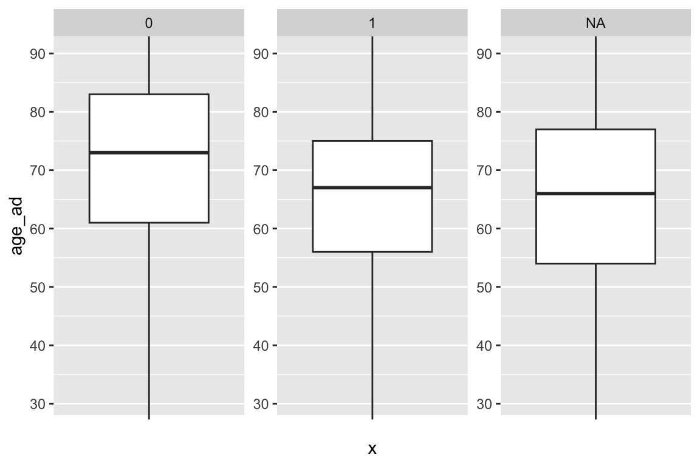
The boxplots show that the age at hospital admission of patient who died within 30 days or not are similar and have similar pattern.
thirty_day_mortvs first lab measurements
Bic <-
mimic_icu_cohort %>%
ggplot(mapping = aes(x = " ",
y = Bicarbonate)) +
geom_boxplot(outlier.shape = NA) +
facet_wrap(~ thirty_day_mort, scale = "free") +
coord_cartesian(ylim = quantile(mimic_icu_cohort$Bicarbonate,
c(0.05, 0.95),
na.rm = T)) +
theme(
axis.title.x = element_blank(),
axis.text.x = element_blank(),
axis.ticks.x = element_blank()
)
Cal <-
mimic_icu_cohort %>%
ggplot(mapping = aes(x = " ",
y = `Calcium, Total`)) +
geom_boxplot(outlier.shape = NA) +
facet_wrap(~ thirty_day_mort, scale = "free") +
coord_cartesian(ylim = quantile(mimic_icu_cohort$`Calcium, Total` ,
c(0.05, 0.95),
na.rm = T)) +
theme(
axis.title.x = element_blank(),
axis.text.x = element_blank(),
axis.ticks.x = element_blank()
)
Chl <-
mimic_icu_cohort %>%
ggplot(mapping = aes(x = " ",
y = Chloride)) +
geom_boxplot(outlier.shape = NA) +
facet_wrap(~ thirty_day_mort, scale = "free") +
coord_cartesian(ylim = quantile(mimic_icu_cohort$Chloride ,
c(0.05, 0.95),
na.rm = T)) +
theme(
axis.title.x = element_blank(),
axis.text.x = element_blank(),
axis.ticks.x = element_blank()
)
Cre <-
mimic_icu_cohort %>%
ggplot(mapping = aes(x = " ",
y = Creatinine)) +
geom_boxplot(outlier.shape = NA) +
facet_wrap(~ thirty_day_mort, scale = "free") +
coord_cartesian(ylim = quantile(mimic_icu_cohort$Creatinine ,
c(0.05, 0.95),
na.rm = T)) +
theme(
axis.title.x = element_blank(),
axis.text.x = element_blank(),
axis.ticks.x = element_blank()
)
Glu <-
mimic_icu_cohort %>%
ggplot(mapping = aes(x = " ",
y = Glucose)) +
geom_boxplot(outlier.shape = NA) +
facet_wrap(~ thirty_day_mort, scale = "free") +
coord_cartesian(ylim = quantile(mimic_icu_cohort$Glucose ,
c(0.05, 0.95),
na.rm = T)) +
theme(
axis.title.x = element_blank(),
axis.text.x = element_blank(),
axis.ticks.x = element_blank()
)
Mag <-
mimic_icu_cohort %>%
ggplot(mapping = aes(x = " ",
y = Magnesium)) +
geom_boxplot(outlier.shape = NA) +
facet_wrap(~ thirty_day_mort, scale = "free") +
coord_cartesian(ylim = quantile(mimic_icu_cohort$Magnesium ,
c(0.05, 0.95),
na.rm = T)) +
theme(
axis.title.x = element_blank(),
axis.text.x = element_blank(),
axis.ticks.x = element_blank()
)
Pot <-
mimic_icu_cohort %>%
ggplot(mapping = aes(x = " ",
y = Potassium)) +
geom_boxplot(outlier.shape = NA) +
facet_wrap(~ thirty_day_mort, scale = "free") +
coord_cartesian(ylim = quantile(mimic_icu_cohort$Potassium,
c(0.05, 0.95),
na.rm = T)) +
theme(
axis.title.x = element_blank(),
axis.text.x = element_blank(),
axis.ticks.x = element_blank()
)
Sod <-
mimic_icu_cohort %>%
ggplot(mapping = aes(x = " ",
y = Sodium)) +
geom_boxplot(outlier.shape = NA) +
facet_wrap(~ thirty_day_mort, scale = "free") +
coord_cartesian(ylim = quantile(mimic_icu_cohort$Sodium,
c(0.05, 0.95),
na.rm = T)) +
theme(
axis.title.x = element_blank(),
axis.text.x = element_blank(),
axis.ticks.x = element_blank()
)
Hem <-
mimic_icu_cohort %>%
ggplot(mapping = aes(x = " ",
y = Hematocrit)) +
geom_boxplot(outlier.shape = NA) +
facet_wrap(~ thirty_day_mort, scale = "free") +
coord_cartesian(ylim = quantile(mimic_icu_cohort$Hematocrit,
c(0.05, 0.95),
na.rm = T)) +
theme(
axis.title.x = element_blank(),
axis.text.x = element_blank(),
axis.ticks.x = element_blank()
)
WBC <-
mimic_icu_cohort %>%
ggplot(mapping = aes(x = " ",
y = WBCs)) +
geom_boxplot(outlier.shape = NA) +
facet_wrap(~ thirty_day_mort, scale = "free") +
coord_cartesian(ylim = quantile(mimic_icu_cohort$WBCs,
c(0.05, 0.95),
na.rm = T)) +
theme(
axis.title.x = element_blank(),
axis.text.x = element_blank(),
axis.ticks.x = element_blank()
)
grid.arrange(Bic, Cal, Chl, Cre, Glu, Mag, Pot, Sod, Hem, WBC, ncol = 2)Warning: Removed 276 rows containing non-finite values (`stat_boxplot()`).Warning: Removed 2805 rows containing non-finite values (`stat_boxplot()`).Warning: Removed 236 rows containing non-finite values (`stat_boxplot()`).Warning: Removed 255 rows containing non-finite values (`stat_boxplot()`).Warning: Removed 352 rows containing non-finite values (`stat_boxplot()`).Warning: Removed 1335 rows containing non-finite values (`stat_boxplot()`).Warning: Removed 262 rows containing non-finite values (`stat_boxplot()`).Warning: Removed 230 rows containing non-finite values (`stat_boxplot()`).Warning: Removed 499 rows containing non-finite values (`stat_boxplot()`).Warning: Removed 623 rows containing non-finite values (`stat_boxplot()`).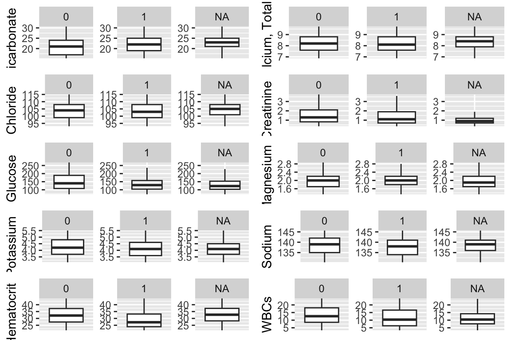
bicarbonate , creatinine ,glucose, and white blood cell groups seem different. We can do further test to test if there are statistically significant.
thirty_day_mortvs first vital measurements
HR <-
mimic_icu_cohort %>%
ggplot(mapping = aes(x = " ",
y = HR)) +
geom_boxplot(outlier.shape = NA) +
facet_wrap(~ thirty_day_mort, scale = "free") +
coord_cartesian(ylim = quantile(mimic_icu_cohort$HR,
c(0.05, 0.95),
na.rm = T))
BP_mean <-
mimic_icu_cohort %>%
ggplot(mapping = aes(x = " ",
y = BP_mean)) +
geom_boxplot(outlier.shape = NA) +
facet_wrap(~ thirty_day_mort, scale = "free") +
coord_cartesian(ylim = quantile(mimic_icu_cohort$BP_mean,
c(0.05, 0.95),
na.rm = T))
BP_Systolic <-
mimic_icu_cohort %>%
ggplot(mapping = aes(x = " ",
y = BP_Systolic)) +
geom_boxplot(outlier.shape = NA) +
facet_wrap(~ thirty_day_mort, scale = "free") +
coord_cartesian(ylim = quantile(mimic_icu_cohort$BP_Systolic,
c(0.05, 0.95),
na.rm = T))
RR <-
mimic_icu_cohort %>%
ggplot(mapping = aes(x = " ",
y = RR)) +
geom_boxplot(outlier.shape = NA) +
facet_wrap(~ thirty_day_mort, scale = "free") +
coord_cartesian(ylim = quantile(mimic_icu_cohort$RR,
c(0.05, 0.95),
na.rm = T))
TF <-
mimic_icu_cohort %>%
ggplot(mapping = aes(x = " ",
y = TF)) +
geom_boxplot(outlier.shape = NA) +
facet_wrap(~ thirty_day_mort, scale = "free") +
coord_cartesian(ylim = quantile(mimic_icu_cohort$TF,
c(0.05, 0.95),
na.rm = T))
grid.arrange(HR, BP_mean, BP_Systolic, TF, RR)Warning: Removed 1 rows containing non-finite values (`stat_boxplot()`).Warning: Removed 612 rows containing non-finite values (`stat_boxplot()`).Warning: Removed 629 rows containing non-finite values (`stat_boxplot()`).Warning: Removed 771 rows containing non-finite values (`stat_boxplot()`).Warning: Removed 36 rows containing non-finite values (`stat_boxplot()`).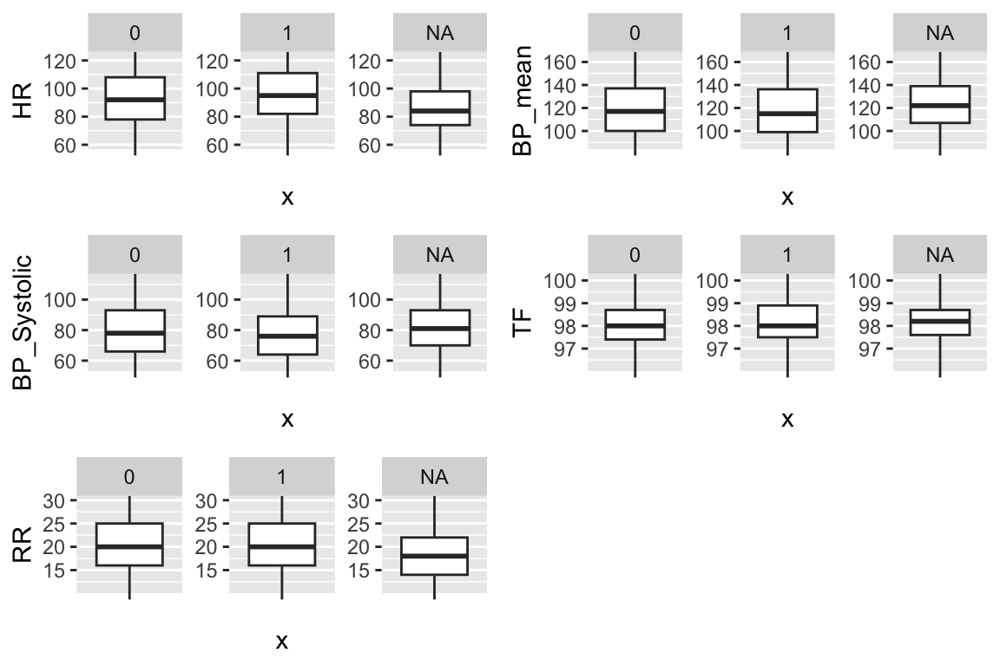
Heart Rate and Respiratory Rate group seem to have some difference but they need statistical test to check.
thirty_day_mortvs first ICU unit
#first_careunit
mimic_icu_cohort %>%
group_by(thirty_day_mort, first_careunit) %>%
summarise(count = n()) %>%
spread(key = first_careunit , value = count) %>%
rowwise() %>%
mutate(total = sum(
c_across(
"Cardiac Vascular Intensive Care Unit (CVICU)":"Trauma SICU (TSICU)"
),
na.rm = T
)) %>%
mutate_at(
vars(
"Cardiac Vascular Intensive Care Unit (CVICU)":"Trauma SICU (TSICU)"
),
funs(round(. / total, digits = 3) * 100)
) %>%
print(width = Inf)Warning: `funs()` was deprecated in dplyr 0.8.0.
ℹ Please use a list of either functions or lambdas:
# Simple named list: list(mean = mean, median = median)
# Auto named with `tibble::lst()`: tibble::lst(mean, median)
# Using lambdas list(~ mean(., trim = .2), ~ median(., na.rm = TRUE))# A tibble: 3 × 11
# Rowwise: thirty_day_mort
thirty_day_mort `Cardiac Vascular Intensive Care Unit (CVICU)`
<dbl> <dbl>
1 0 5.1
2 1 8.5
3 NA 19.6
`Coronary Care Unit (CCU)` `Medical Intensive Care Unit (MICU)`
<dbl> <dbl>
1 14 27.2
2 6.5 17.7
3 11.3 18.4
`Medical/Surgical Intensive Care Unit (MICU/SICU)` `Neuro Intermediate`
<dbl> <dbl>
1 20.5 0.5
2 33.1 0.7
3 16.1 2.6
`Neuro Stepdown` `Neuro Surgical Intensive Care Unit (Neuro SICU)`
<dbl> <dbl>
1 0.2 4.2
2 0.3 2
3 1.2 2.4
`Surgical Intensive Care Unit (SICU)` `Trauma SICU (TSICU)` total
<dbl> <dbl> <int>
1 16 12.3 4807
2 20.8 10.2 293
3 15.3 13 46447The percentage of paients died within 30 days is higher in CCU MICU Neuro SICU TSICU group.